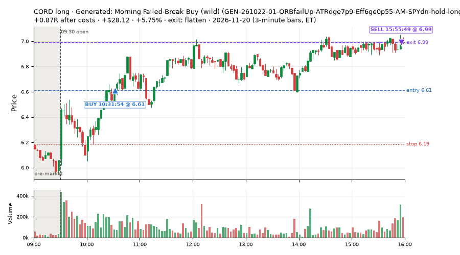
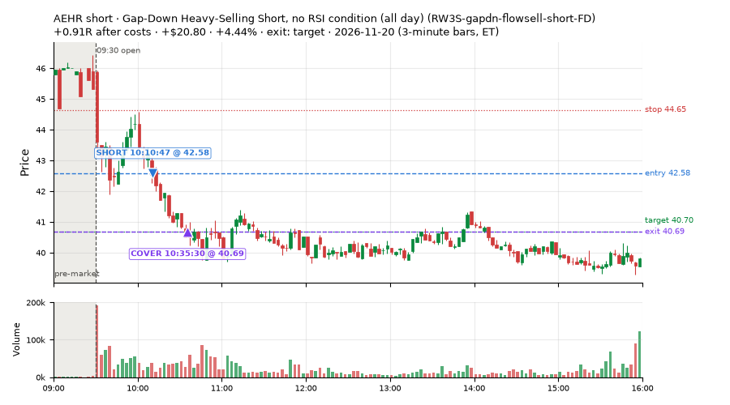
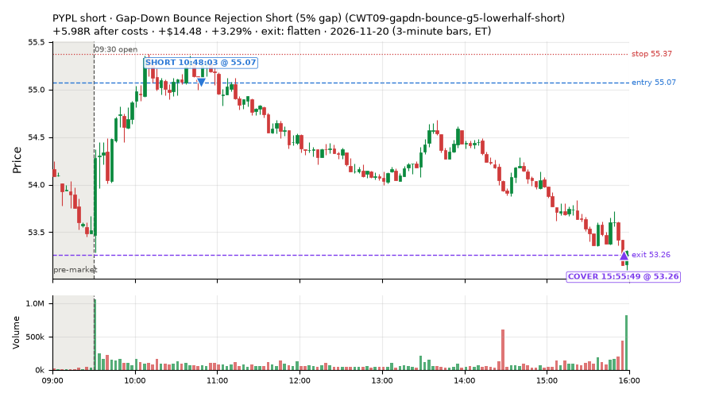
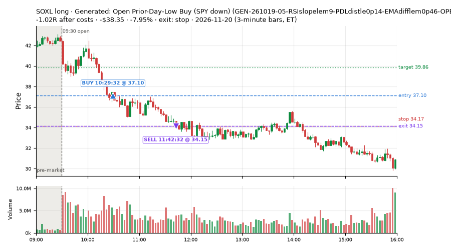
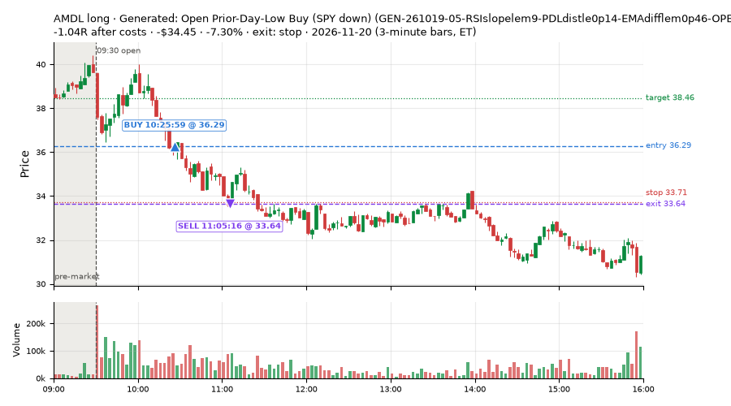
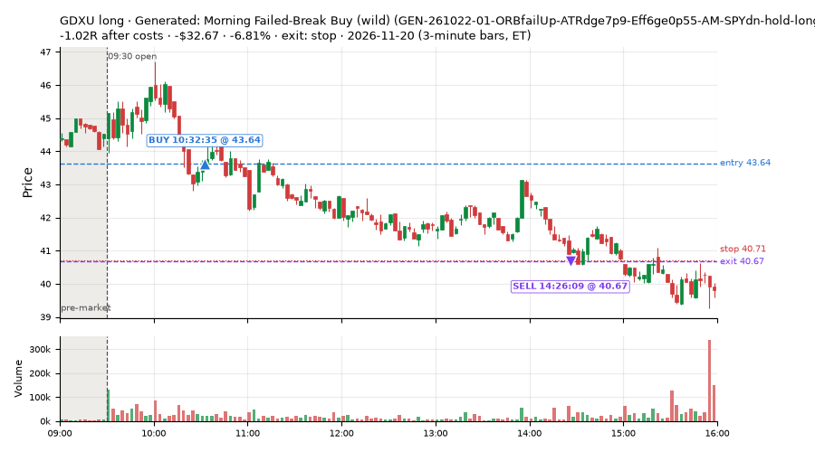
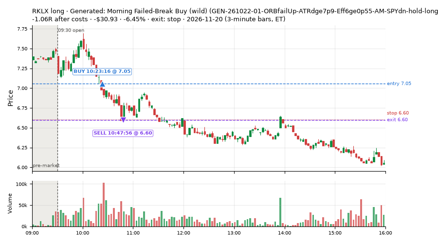
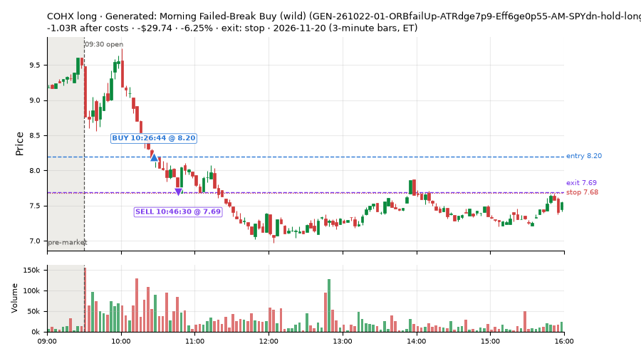

378 trades · win rate 33% · P/L $-1,542.45
PROBATION: no live setup has passed both locked test periods. 10 owner-directed setups added 2026-10-08 (MarcoFlow top 5 + 5 new), untested live. RW6G1 (RW6 + VWAP band guard) added 2026-10-09, probation.

| Symbol | Setup | Side | In | Out | Entry | Exit | Exit reason | % gained | P/L |
|---|---|---|---|---|---|---|---|---|---|
| CORD | Generated: Morning Failed-Break Buy (wild) (GEN-261022-01-ORBfailUp-ATRdge7p9-Eff6ge0p55-AM-SPYdn-hold-long) | long | 10:31 | 15:55 | 6.61 | 6.99 | flatten | +5.75% | $28.12 |
| AEHR | Gap-Down Heavy-Selling Short, no RSI condition (all day) (RW3S-gapdn-flowsell-short-FD) | short | 10:10 | 10:35 | 42.58 | 40.69 | target | +4.44% | $20.80 |
| PYPL | Gap-Down Bounce Rejection Short (5% gap) (CWT09-gapdn-bounce-g5-lowerhalf-short) | short | 10:48 | 15:55 | 55.07 | 53.26 | flatten | +3.29% | $14.48 |
| Symbol | Setup | Side | In | Out | Entry | Exit | Exit reason | % lost | P/L |
|---|---|---|---|---|---|---|---|---|---|
| SOXL | GEN-261019-05-RSIslopelem9-PDLdistle0p14-EMAdifflem0p46-OPEN-SPYltm0p5-t1s1-long | long | 10:29 | 11:42 | 37.10 | 34.15 | stop | -7.95% | $-38.35 |
| AMDL | GEN-261019-05-RSIslopelem9-PDLdistle0p14-EMAdifflem0p46-OPEN-SPYltm0p5-t1s1-long | long | 10:25 | 11:05 | 36.29 | 33.64 | stop | -7.30% | $-34.45 |
| GDXU | GEN-261022-01-ORBfailUp-ATRdge7p9-Eff6ge0p55-AM-SPYdn-hold-long | long | 10:32 | 14:26 | 43.64 | 40.67 | stop | -6.81% | $-32.67 |
| RKLX | GEN-261022-01-ORBfailUp-ATRdge7p9-Eff6ge0p55-AM-SPYdn-hold-long | long | 10:23 | 10:47 | 7.05 | 6.60 | stop | -6.45% | $-30.93 |
| COHX | GEN-261022-01-ORBfailUp-ATRdge7p9-Eff6ge0p55-AM-SPYdn-hold-long | long | 10:26 | 10:46 | 8.20 | 7.69 | stop | -6.25% | $-29.74 |








Signal to fill: median 1s, 90th percentile 3s (378 trades). Bars close each minute; the order follows the bar close.
Best excursion (MFE): median 0.36R; worst (MAE) median 1.02R. 40% of trades never got +0.25R in our favour; 10 reached +1R and still closed at or below 0.
| Symbol | Setup | Best R | Worst R | Closed R |
|---|---|---|---|---|
| QYLD | CWT13-vwapstretch-z05-long | +2.18 | -1.21 | -1.75 |
| QQQI | CWT13-vwapstretch-z05-long | +2.47 | -1.17 | -1.37 |
| IYW | CWT13-vwapstretch-z05-long | +1.90 | -1.41 | -1.42 |
| SAP | CWT14-failbrk-pdl-p10-long | +1.68 | -1.01 | -1.28 |
| SMCI | GEN-261028-08-Ret5mge0p21-SMA20dlem0p16-Compress6le0p11-LUNCH-BRoplt0p35-holdtr-long | +2.62 | -0.22 | -0.04 |
| Entry time | Trades | Win | Avg R | P/L |
|---|---|---|---|---|
| 09:50-10:30 | 184 | 30% | -0.56 | $-992.44 |
| 10:30-11:30 | 113 | 42% | -0.29 | $-345.74 |
| 11:30-13:00 | 81 | 25% | -0.68 | $-204.27 |
| Setup | Trades | Win | Avg R after costs | Adj R (net of SPY) | Avg R ex-market (all sessions) | P/L |
|---|---|---|---|---|---|---|
| Gap-Down Bounce Rejection Short (5% gap) (CWT09-gapdn-bounce-g5-lowerhalf-short) | 2.0 | 100% | +3.58 | +0.31 | -0.35 (beta -1.14, n 160) | $29.02 |
| Stretched Below VWAP Bounce (CWT13-vwapstretch-z05-long) | 42.0 | 12% | -0.98 | -0.20 | -0.28 (beta +1.08, n 52) | $-132.46 |
| Failed Prior-Day-Low Break Long (CWT14-failbrk-pdl-p10-long) | 35.0 | 40% | -0.50 | -0.13 | -0.23 (beta +0.83, n 64) | $-56.58 |
| Failed Prior-Day-Low Break Long (0.1 ATR, low volume) [fill] (CWT14-failbrk-pdl-p10-lowvol-long) | 19.0 | 16% | -0.93 | -0.17 | -0.41 (beta +0.93, n 30) | $-46.31 |
| Generated: Open Prior-Day-Low Buy (SPY down) (GEN-261019-05-RSIslopelem9-PDLdistle0p14-EMAdifflem0p46-OPEN-SPYltm0p5-t1s1-long) | 75.0 | 1% | -1.04 | -0.46 | -0.89 (beta +0.00, n 98) | $-622.94 |
| Generated: Morning RSI Surge Buy (GEN-261020-07-RSIslopege19-LowWickge0p33-ATRdge4p4-AM-BRvwgt0p7-hold-long) | 9.0 | 0% | -1.12 | -0.04 | -1.32 (beta -0.14, n 9) | $-65.13 |
| Generated: Late-AM Divergence Short (quiet) (GEN-261021-01-BearDiv-RVolDayle0p47-BarsSinceHODle0-LAM-SPYltm0p25-t1s1-short) | 5.0 | 100% | +0.57 | -0.15 | +0.01 (beta -0.72, n 6) | $8.86 |
| Generated: Morning Failed-Break Buy (wild) (GEN-261022-01-ORBfailUp-ATRdge7p9-Eff6ge0p55-AM-SPYdn-hold-long) | 65.0 | 5% | -0.98 | -0.54 | -1.24 (beta -0.26, n 89) | $-856.79 |
| Generated: Morning Strong-Trend Drop Short (GEN-261022-09-Ret15mATRlem0p16-BarRngATRge0p11-ADX7ge64-AM-BRvwlt0p3-hold-short) | 5.0 | 100% | +1.94 | -1.03 | -1.10 (beta -1.02, n 14) | $43.59 |
| Generated: Midday Oversold Short (quiet day) (GEN-261028-06-RSI5le13-VWAPatrlem0p15-DayRngVsPrevle0p34-MID-BRoplt0p35-hold-short) | 4.0 | 50% | +0.50 | -0.73 | -1.78 (beta -1.66, n 6) | $4.19 |
| Generated: Lunch Tight-Range Pop Buy (GEN-261028-08-Ret5mge0p21-SMA20dlem0p16-Compress6le0p11-LUNCH-BRoplt0p35-holdtr-long) | 15.0 | 7% | -0.94 | -0.42 | -1.15 (beta -0.16, n 25) | $-140.27 |
| Early Sellers Above VWAP (all day) (MF1-945-flowsell-vwapup-FD) | 10.0 | 70% | +0.76 | -0.96 | -0.36 (beta -1.70, n 127) | $38.79 |
| Early Sellers into a Pop (all day) (MF3-open-flowsell-rsi5hi-FD) | 11.0 | 91% | +0.58 | -0.55 | -0.15 (beta -0.77, n 185) | $52.74 |
| Early Sellers, Strong Heat (all day) (MF4-h40-open-flowsell-FD) | 36.0 | 94% | +0.17 | -0.02 | +0.04 (beta -0.27, n 70) | $98.92 |
| Sellers into Strength (full-day copy) (MF5-flowsell-vwapup-rsi5hi-FD) | 6.0 | 100% | +1.01 | -1.29 | -0.07 (beta -0.81, n 108) | $14.28 |
| Big Gainer Average Reclaim Fade (NS2-sma50break-overbought-short) owner-directed; holdouts once: Sep-Oct -0.115R n76, Apr-Jun +0.021R n587 | 4.0 | 100% | +0.65 | -0.23 | -0.15 (beta -0.74, n 18) | $17.03 |
| Big Loser VWAP Reclaim Fade (all day) (NS3-failed-vwap-reclaim-short-FD) | 1.0 | 100% | +1.66 | -1.13 | -0.21 (beta -0.88, n 178) | $6.40 |
| Gap-Down Heavy-Selling Short, no RSI condition (all day) (RW3S-gapdn-flowsell-short-FD) | 18.0 | 89% | +0.52 | +0.12 | -0.14 (beta -0.58, n 209) | $109.79 |
| Opening-Range Breakdown Buy (all day) (ST1-ordn-long-pm-t05s1-FD) | 1.0 | 100% | +0.11 | +0.26 | -0.01 (beta +0.82, n 54) | $1.63 |
| Afternoon Blow-off Short (all day) (exhaustion_short-FD) | 3.0 | 67% | +0.23 | -0.79 | +0.32 (beta -0.44, n 14) | $5.95 |
| Midday Gap-Up Dip Buy (heat_fade_long) failed Apr-Jun holdout: -0.138R/trade over 1043 trades | 12.0 | 8% | -0.92 | -0.07 | +0.08 (beta +0.98, n 169) | $-53.17 |
Market direction (SPY, beta 1) accounted for $-676.80 of today's $-1,542.45; the rest ($-865.65) came from the setups themselves. Avg R net of SPY: -0.34 (incl. a hedge leg's cost; report only).
50 setups live today. Today: 1488 signals, 378 taken, 20 lost because another setup held the symbol (1%). Since 2026-10-21 (23 sessions): 32484 signals, 10078 taken, 1364 lost to other setups (4%). Peak open positions today 193 of 300 slots. Earnings blackout removed 181 symbols before scanning.
Simulated playing time (not live): 22348 what-if trades of signals not taken, avg -0.04R, 56% winners; of them 1363 lost to another setup (avg -0.02R).
Silent: GEN-261023-09-ORBfailDn-Ret15mge0p54-LATE-BRvwgt0p7-holdtr-short, GEN-261020-02-RSIslopelem19-BarRngATRge0p14-BuyPressge0p17-LATE-BRvwgt0p7-t05s1-short, GEN-261021-08-RSI2le0-Ret15mATRge0p16-ATRdge3p6-LUNCH-QQQgt0p6-holdtr-long, GEN-POD1022-01-thrasher-breadth-thrust-stocks-holdtr-long, CWT04-backside-vwaptest-a25-short, GEN-261023-01-VWAPxUp-VWAPatrge0p33-LAM-SPYgt0p5-t05s05-short, GEN-261023-05-NewLOD-SMA20dlem0p94-ORLdistlem0p24-PM-BRopgt0p65-hold-long, GEN-261021-10-MACDhge0p079-VWAPbarslem7-OPEN-QQQup-t1s05-long, GEN-261029-10-RSIslopege19-Ret5mlem0p21-EMAdiffge0p29-OPEN-BRvwgt0p5-t1s1-short, GEN-261028-03-EMAdChgge0p15-VWAPxUp-Since950ATRlem0p43-LUNCH-SPYgt0p25-hold-long, GEN-261028-10-BarRngATRge0p18-Flow3lem0p54-FromPCATRge0p28-PM-SPYgt0p5-hold-long, GEN-261023-02-Ret15mATRlem0p068-EMAdChgge0p028-ATRdge6-PM-BRopgt0p65-hold-long, NM-RWR1-exh150-gapdn-spyup-pm-short, GEN-261022-02-ORBfailUp-EMAdChglem0p094-ADX7ge57-LATE-BRvwgt0p7-t05s1-long, GEN-261029-05-BearDiv-RSI14ge78-Compress6le0p091-AM-BRopgt0p5-t05s05-long · Crowded out: MF5-flowsell-vwapup-rsi5hi, NS2-sma50break-overbought-short · Starved: MF1-945-flowsell-vwapup-FD, heat_fade_long, heat_fade_long-FD, heat_fade_short-FD
| Prio | Setup | Today sig / taken | Sessions | Signals / taken / trades | Taken/day | Expected/day | Lost to other setups | Lost to (setup n) | Top skip reasons | SIMULATED: not-taken n / avg R / win | Verdict |
|---|---|---|---|---|---|---|---|---|---|---|---|
| 1 | Opening-Range Breakdown Buy (all day) ST1-ordn-long-pm-t05s1-FD | 2 / 1 | 23 | 87 / 54 / 54 | 2.35 | 3.49 | 2 | heat_fade_short-FD 1, NS3-failed-vwap-reclaim-short-FD 1 | spread / quote / size 21, daily loss cap 4, slots full 3 | 33 / -0.09R / 52% | slow 11.7 entries/week; ~5 weeks to 60 trades |
| 2 | Gap-Down Bounce Rejection Short (5% gap) CWT09-gapdn-bounce-g5-lowerhalf-short | 18 / 2 | 23 | 1024 / 160 / 160 | 6.96 | – | 13 | CWT14-failbrk-pdl-p05-lowvol-long 4, CWT12-coil-k4-long 3, CWT14-failbrk-pdl-p05-long 3 | not shortable / shorts off 594, daily loss cap 100, spread / quote / size 94 | 860 / -0.03R / 48% | ok 34.8 entries/week |
| 3 | Big Loser VWAP Reclaim Fade (all day) NS3-failed-vwap-reclaim-short-FD | 30 / 1 | 15 | 988 / 178 / 178 | 11.87 | 22.02 | 75 | NS3-failed-vwap-reclaim-short-FD 21, ST2-slope20up-long-am-t05s1-FD 19, RW4-ns3-adv150-short-FD 19 | daily loss cap 440, not shortable / shorts off 125, slots full 85 | 810 / -0.01R / 46% | ok 59.3 entries/week |
| 4 | Sellers into Strength (full-day copy) MF5-flowsell-vwapup-rsi5hi-FD | 17 / 6 | 14 | 215 / 108 / 108 | 7.71 | 15.47 | 4 | MF1-945-flowsell-vwapup-FD 3, MF3-open-flowsell-rsi5hi-FD 3, RW3S-gapdn-flowsell-short-FD 2 | broker rejected 33, daily loss cap 32, spread / quote / size 26 | 107 / -0.05R / 50% | ok 38.6 entries/week |
| 5 | Big Gainer Fade, VWAP Band Guard (all day) RW6G1-ns2-up3-vwap2sd-short-FD | 4 / 0 | 13 | 88 / 37 / 37 | 2.85 | 3.73 | 4 | RW6-ns2-up3-short-FD 3, NS2-sma50break-overbought-short-FD 2, RW6G1-ns2-up3-vwap2sd-short-FD 2 | not shortable / shorts off 36, symbol held by another setup 4, broker rejected 4 | 51 / +0.20R / 63% | slow 14.2 entries/week; ~4 weeks to 60 trades |
| 6 | Generated: Late Failed-Breakdown Pop Short GEN-261023-09-ORBfailDn-Ret15mge0p54-LATE-BRvwgt0p7-holdtr-short | 0 / 0 | 3 | 0 / 0 / 0 | 0.00 | – | 0 | – | – | 0 / – | silent no signals in 3 session(s); no expected rate on file |
| 7 | Generated: Midday Oversold Short (quiet day) GEN-261028-06-RSI5le13-VWAPatrlem0p15-DayRngVsPrevle0p34-MID-BRoplt0p35-hold-short | 7 / 4 | 3 | 9 / 6 / 6 | 2.00 | – | 0 | – | daily loss cap 2, spread / quote / size 1 | 3 / -0.13R / 67% | slow 10.0 entries/week; ~6 weeks to 60 trades |
| 8 | Generated: Late-AM Divergence Short (quiet) GEN-261021-01-BearDiv-RVolDayle0p47-BarsSinceHODle0-LAM-SPYltm0p25-t1s1-short | 12 / 5 | 3 | 16 / 6 / 6 | 2.00 | – | 0 | – | other 6, spread / quote / size 3, not shortable / shorts off 1 | 10 / +0.10R / 60% | slow 10.0 entries/week; ~6 weeks to 60 trades |
| 9 | Stretched Below VWAP Bounce CWT13-vwapstretch-z05-long | 241 / 42 | 2 | 375 / 52 / 52 | 26.00 | – | 0 | – | daily loss cap 314, spread / quote / size 7, price through stop/target 1 | 323 / -0.35R / 45% | ok 130.0 entries/week |
| 10 | Generated: Midday Volume Buy (volatile) GEN-261027-05-VolRatioge1p5-ORLdistge0p41-ATRdge6-MID-BRvwgt0p7-t05s1-long | 0 / 0 | 2 | 0 / 0 / 0 | 0.00 | – | 0 | – | – | 0 / – | quiet - wait no signals in 2 session(s); too early to tell |
| 11 | Generated: Lunch Failed Breakdown Buy GEN-261020-05-ORBfailDn-VWAPcrossesge4-SMA20dlem0p31-LUNCH-SPYgt0p25-holdtr-long | 0 / 0 | 2 | 0 / 0 / 0 | 0.00 | – | 0 | – | – | 0 / – | quiet - wait no signals in 2 session(s); too early to tell |
| 12 | Big Gainer Dip-and-Pop (all day) NS1-rsidip-rsi5pop-long-FD | 1 / 0 | 2 | 4 / 2 / 2 | 1.00 | 5.39 | 0 | – | daily loss cap 1, spread / quote / size 1 | 2 / -1.06R / 0% | watch 1.00 entries/day vs ~5.39 expected |
| 13 | Afternoon Blow-off Short (all day) exhaustion_short-FD | 5 / 3 | 2 | 29 / 14 / 14 | 7.00 | 64.64 | 0 | – | not shortable / shorts off 13, spread / quote / size 2 | 15 / +0.31R / 67% | watch 7.00 entries/day vs ~64.64 expected |
| 14 | Sellers into Strength (all day) MF5-flowsell-vwapup-rsi5hi | 17 / 0 | 2 | 23 / 0 / 0 | 0.00 | 15.47 | 11 | MF5-flowsell-vwapup-rsi5hi-FD 10, MF3-open-flowsell-rsi5hi-FD 5, MF1-945-flowsell-vwapup-FD 2 | symbol held by another setup 11, spread / quote / size 11, daily loss cap 1 | 23 / +0.61R / 87% | crowded-out 11 of 23 signals (48%) lost to setups already holding the symbol |
| 15 | Generated: Morning VWAP-Loss Low Buy (QQQ up) GEN-261028-02-VWAPxDn-NewLOD-AM-QQQgt0p6-t1s1-long | 0 / 0 | 2 | 0 / 0 / 0 | 0.00 | – | 0 | – | – | 0 / – | quiet - wait no signals in 2 session(s); too early to tell |
| 16 | Big Gainer Average Reclaim Fade NS2-sma50break-overbought-short | 15 / 4 | 23 | 267 / 18 / 18 | 0.78 | 5.74 | 129 | NS2-sma50break-overbought-short-FD 115, RW6-ns2-up3-short-FD 56, CWT12-coil-k4-long 10 | symbol held by another setup 129, spread / quote / size 65, not shortable / shorts off 33 | 249 / +0.39R / 75% | crowded-out 129 of 267 signals (48%) lost to setups already holding the symbol |
| 17 | Early Sellers Above VWAP (all day) MF1-945-flowsell-vwapup-FD | 33 / 10 | 23 | 438 / 127 / 127 | 5.52 | 23.94 | 8 | CWT12-coil-k4-long 5, CWT14-failbrk-orl-p05-long 2, CWT12-coil-k6-long 1 | daily loss cap 147, spread / quote / size 115, not shortable / shorts off 15 | 311 / -0.10R / 35% | starved 5.52 entries/day vs ~23.94 expected |
| 18 | Midday Gap-Up Dip Buy heat_fade_long | 26 / 12 | 23 | 422 / 169 / 169 | 7.35 | 30.36 | 23 | heat_fade_long-FD 12, NS3-failed-vwap-reclaim-short-FD 3, RW4-ns3-adv150-short-FD 3 | daily loss cap 153, spread / quote / size 61, symbol held by another setup 23 | 253 / +0.17R / 60% | starved 7.35 entries/day vs ~30.36 expected |
| 19 | Early Sellers into a Pop (all day) MF3-open-flowsell-rsi5hi-FD | 34 / 11 | 14 | 361 / 185 / 185 | 13.21 | 24.16 | 5 | ST2-slope20up-long-am-t05s1-FD 1, heat_fade_long 1, CWT14-failbrk-orl-p05-long 1 | daily loss cap 58, spread / quote / size 46, broker rejected 27 | 176 / +0.07R / 55% | ok 66.1 entries/week |
| 20 | Big Loser Flush Buy (all day) NS5-sma50-flush-oversold-long-FD | 0 / 0 | 13 | 122 / 68 / 68 | 5.23 | 6.32 | 8 | NS3-failed-vwap-reclaim-short-FD 4, RW4-ns3-adv150-short-FD 4, ST4-emadn-long-am-t1s05-FD 1 | daily loss cap 26, spread / quote / size 12, symbol held by another setup 8 | 54 / -0.02R / 50% | ok 26.2 entries/week |
| 21 | Gap-Down Heavy-Selling Short, no RSI condition (all day) RW3S-gapdn-flowsell-short-FD | 370 / 18 | 5 | 941 / 209 / 209 | 41.80 | – | 14 | CWT12-coil-k4-long 3, GEN-261019-05-RSIslopelem9-PDLdistle0p14-EMAdifflem0p46-OPEN-SPYltm0p5-t1s1-long 3, CWT14-failbrk-pdl-p05-long 2 | daily loss cap 483, spread / quote / size 183, not shortable / shorts off 48 | 732 / +0.41R / 75% | ok 209.0 entries/week |
| 22 | Generated: Late Uptrend Dip Buy (up day) GEN-261026-09-BBpctle0p3-SMA20slopege0p46-FromPCATRge0p45-LATE-BRvwgt0p6-t05s05-long | 0 / 0 | 3 | 1 / 1 / 1 | 0.33 | – | 0 | – | – | 0 / – | slow 1.7 entries/week; ~36 weeks to 60 trades |
| 23 | Generated: Late RSI Drop Short (big bar) GEN-261020-02-RSIslopelem19-BarRngATRge0p14-BuyPressge0p17-LATE-BRvwgt0p7-t05s1-short | 0 / 0 | 3 | 0 / 0 / 0 | 0.00 | – | 0 | – | – | 0 / – | silent no signals in 3 session(s); no expected rate on file |
| 24 | Generated: Lunch RSI(2) Flush Buy (volatile) GEN-261021-08-RSI2le0-Ret15mATRge0p16-ATRdge3p6-LUNCH-QQQgt0p6-holdtr-long | 0 / 0 | 3 | 0 / 0 / 0 | 0.00 | – | 0 | – | – | 0 / – | silent no signals in 3 session(s); no expected rate on file |
| 25 | Podcast: Breadth Thrust, Strong Large Caps (observation) GEN-POD1022-01-thrasher-breadth-thrust-stocks-holdtr-long | 0 / 0 | 3 | 0 / 0 / 0 | 0.00 | – | 0 | – | – | 0 / – | silent no signals in 3 session(s); no expected rate on file |
| 26 | Backside VWAP-Test Short (big runner) CWT04-backside-vwaptest-a25-short | 0 / 0 | 3 | 0 / 0 / 0 | 0.00 | – | 0 | – | – | 0 / – | silent no signals in 3 session(s); no expected rate on file |
| 27 | Generated: Late-AM VWAP Pop Short (SPY up) GEN-261023-01-VWAPxUp-VWAPatrge0p33-LAM-SPYgt0p5-t05s05-short | 0 / 0 | 3 | 0 / 0 / 0 | 0.00 | – | 0 | – | – | 0 / – | silent no signals in 3 session(s); no expected rate on file |
| 28 | Generated: PM New-Low Buy (strong mkt) GEN-261023-05-NewLOD-SMA20dlem0p94-ORLdistlem0p24-PM-BRopgt0p65-hold-long | 0 / 0 | 3 | 0 / 0 / 0 | 0.00 | – | 0 | – | – | 0 / – | silent no signals in 3 session(s); no expected rate on file |
| 29 | Generated: Open Below-VWAP Turn Buy (QQQ up) GEN-261021-10-MACDhge0p079-VWAPbarslem7-OPEN-QQQup-t1s05-long | 0 / 0 | 3 | 0 / 0 / 0 | 0.00 | – | 0 | – | – | 0 / – | silent no signals in 3 session(s); no expected rate on file |
| 30 | Generated: Open RSI Pop Reversal Short GEN-261029-10-RSIslopege19-Ret5mlem0p21-EMAdiffge0p29-OPEN-BRvwgt0p5-t1s1-short | 0 / 0 | 3 | 0 / 0 / 0 | 0.00 | – | 0 | – | – | 0 / – | silent no signals in 3 session(s); no expected rate on file |
| 31 | Generated: Lunch VWAP Reclaim Buy GEN-261028-03-EMAdChgge0p15-VWAPxUp-Since950ATRlem0p43-LUNCH-SPYgt0p25-hold-long | 0 / 0 | 3 | 0 / 0 / 0 | 0.00 | – | 0 | – | – | 0 / – | silent no signals in 3 session(s); no expected rate on file |
| 32 | Generated: PM Big Red Bar Buy (up day) GEN-261028-10-BarRngATRge0p18-Flow3lem0p54-FromPCATRge0p28-PM-SPYgt0p5-hold-long | 0 / 0 | 3 | 0 / 0 / 0 | 0.00 | – | 0 | – | – | 0 / – | silent no signals in 3 session(s); no expected rate on file |
| 33 | Generated: PM Volatile Dip Buy (strong mkt) GEN-261023-02-Ret15mATRlem0p068-EMAdChgge0p028-ATRdge6-PM-BRopgt0p65-hold-long | 0 / 0 | 3 | 0 / 0 / 0 | 0.00 | – | 0 | – | – | 0 / – | silent no signals in 3 session(s); no expected rate on file |
| 34 | Afternoon Exhaustion Short, Gap-Down, SPY Up (near-miss) NM-RWR1-exh150-gapdn-spyup-pm-short | 0 / 0 | 3 | 0 / 0 / 0 | 0.00 | – | 0 | – | – | 0 / – | silent no signals in 3 session(s); no expected rate on file |
| 35 | Generated: Late Failed-Breakout Buy (trend) GEN-261022-02-ORBfailUp-EMAdChglem0p094-ADX7ge57-LATE-BRvwgt0p7-t05s1-long | 0 / 0 | 3 | 0 / 0 / 0 | 0.00 | – | 0 | – | – | 0 / – | silent no signals in 3 session(s); no expected rate on file |
| 36 | Prior-Day Low Sweep Reversal to VWAP LIQ-pdl-sweep-open15-vwap-long | 1 / 0 | 3 | 2 / 1 / 1 | 0.33 | – | 0 | – | daily loss cap 1 | 1 / -1.06R / 0% | slow 1.7 entries/week; ~36 weeks to 60 trades |
| 37 | Generated: Lunch Wide-Range Short (SPY down) GEN-261021-03-RSI5le34-Ret15mATRge0p12-DayRngVsPrevge1p2-LUNCH-SPYltm0p25-t05s1-short | 1 / 0 | 3 | 14 / 1 / 1 | 0.33 | – | 0 | – | not shortable / shorts off 10, spread / quote / size 3 | 13 / -0.21R / 54% | slow 1.7 entries/week; ~36 weeks to 60 trades |
| 38 | Generated: Morning Overbought Coil Buy GEN-261029-05-BearDiv-RSI14ge78-Compress6le0p091-AM-BRopgt0p5-t05s05-long | 0 / 0 | 3 | 0 / 0 / 0 | 0.00 | – | 0 | – | – | 0 / – | silent no signals in 3 session(s); no expected rate on file |
| 39 | Generated: Morning Strong-Trend Drop Short GEN-261022-09-Ret15mATRlem0p16-BarRngATRge0p11-ADX7ge64-AM-BRvwlt0p3-hold-short | 10 / 5 | 2 | 25 / 14 / 14 | 7.00 | – | 0 | – | spread / quote / size 7, not shortable / shorts off 2, price through stop/target 2 | 11 / +0.53R / 55% | ok 35.0 entries/week |
| 40 | Failed Prior-Day-Low Break Long CWT14-failbrk-pdl-p10-long | 124 / 35 | 2 | 350 / 64 / 64 | 32.00 | – | 0 | – | daily loss cap 238, spread / quote / size 48 | 286 / -0.37R / 44% | ok 160.0 entries/week |
| 41 | Generated: Open Prior-Day-Low Buy (SPY down) GEN-261019-05-RSIslopelem9-PDLdistle0p14-EMAdifflem0p46-OPEN-SPYltm0p5-t1s1-long | 100 / 75 | 2 | 132 / 98 / 98 | 49.00 | – | 4 | RW3S-gapdn-flowsell-short-FD 4, MF1-945-flowsell-vwapup-FD 1 | spread / quote / size 29, symbol held by another setup 4, per-setup cap 1 | 34 / -0.69R / 15% | ok 245.0 entries/week |
| 42 | Early Sellers, Strong Heat (all day) MF4-h40-open-flowsell-FD | 87 / 36 | 2 | 142 / 70 / 70 | 35.00 | 16.45 | 8 | GEN-261022-01-ORBfailUp-ATRdge7p9-Eff6ge0p55-AM-SPYdn-hold-long 4, GEN-261019-05-RSIslopelem9-PDLdistle0p14-EMAdifflem0p46-OPEN-SPYltm0p5-t1s1-long 3, MF5-flowsell-vwapup-rsi5hi-FD 1 | spread / quote / size 40, not shortable / shorts off 17, symbol held by another setup 8 | 71 / +0.27R / 87% | ok 175.0 entries/week |
| 43 | Failed Prior-Day-Low Break Long (0.1 ATR, low volume) [fill] CWT14-failbrk-pdl-p10-lowvol-long | 78 / 19 | 2 | 188 / 30 / 30 | 15.00 | – | 0 | – | daily loss cap 120, spread / quote / size 38 | 158 / -0.52R / 34% | ok 75.0 entries/week |
| 44 | Generated: Morning RSI Surge Buy GEN-261020-07-RSIslopege19-LowWickge0p33-ATRdge4p4-AM-BRvwgt0p7-hold-long | 15 / 9 | 2 | 15 / 9 / 9 | 4.50 | – | 1 | NS2-sma50break-overbought-short 1 | spread / quote / size 5, symbol held by another setup 1 | 6 / -1.05R / 0% | ok 22.5 entries/week |
| 45 | Generated: Midday Gap-Up Failed-Break Buy GEN-261021-06-ORBfailUp-Gapge1p2-MID-BRopgt0p5-hold-long | 0 / 0 | 2 | 0 / 0 / 0 | 0.00 | – | 0 | – | – | 0 / – | quiet - wait no signals in 2 session(s); too early to tell |
| 46 | Early Sellers, Mid-High RSI (all day) MF2-open-rsimidhi-flowsell-FD | 14 / 0 | 2 | 64 / 30 / 30 | 15.00 | 10.09 | 3 | RW3S-gapdn-flowsell-short-FD 2, MF1-945-flowsell-vwapup-FD 1, MF2-open-rsimidhi-flowsell-FD 1 | spread / quote / size 17, daily loss cap 11, symbol held by another setup 3 | 34 / +0.54R / 68% | ok 75.0 entries/week |
| 47 | Generated: Morning Selling-Burst Buy GEN-261028-09-FlowShiftlem0p65-ADX7le23-AM-BRoplt0p35-t05s1-long | 0 / 0 | 2 | 31 / 20 / 20 | 10.00 | – | 1 | RW3S-gapdn-flowsell-short-FD 1 | spread / quote / size 10, symbol held by another setup 1 | 11 / -0.01R / 73% | ok 50.0 entries/week |
| 48 | Generated: Morning VWAP Reclaim Buy (SPY up) GEN-261021-07-VWAPxUp-ORBfailUp-AM-SPYgt0p5-hold-long | 0 / 0 | 2 | 0 / 0 / 0 | 0.00 | – | 0 | – | – | 0 / – | quiet - wait no signals in 2 session(s); too early to tell |
| 49 | Generated: Lunch Tight-Range Pop Buy GEN-261028-08-Ret5mge0p21-SMA20dlem0p16-Compress6le0p11-LUNCH-BRoplt0p35-holdtr-long | 97 / 15 | 2 | 120 / 25 / 25 | 12.50 | – | 2 | MF2-open-rsimidhi-flowsell-FD 1, MF4-h40-open-flowsell-FD 1 | daily loss cap 86, spread / quote / size 6, symbol held by another setup 2 | 95 / -0.58R / 15% | ok 62.5 entries/week |
| 50 | Generated: Morning Failed-Break Buy (wild) GEN-261022-01-ORBfailUp-ATRdge7p9-Eff6ge0p55-AM-SPYdn-hold-long | 129 / 65 | 2 | 189 / 89 / 89 | 44.50 | – | 1 | MF4-h40-open-flowsell-FD 1 | spread / quote / size 87, daily loss cap 10, symbol held by another setup 1 | 100 / -0.88R / 7% | ok 222.5 entries/week |
Every trade is attached as a CSV you can open and edit in Excel or Google Sheets. Live page: https://misiti15.github.io/MCF/live/